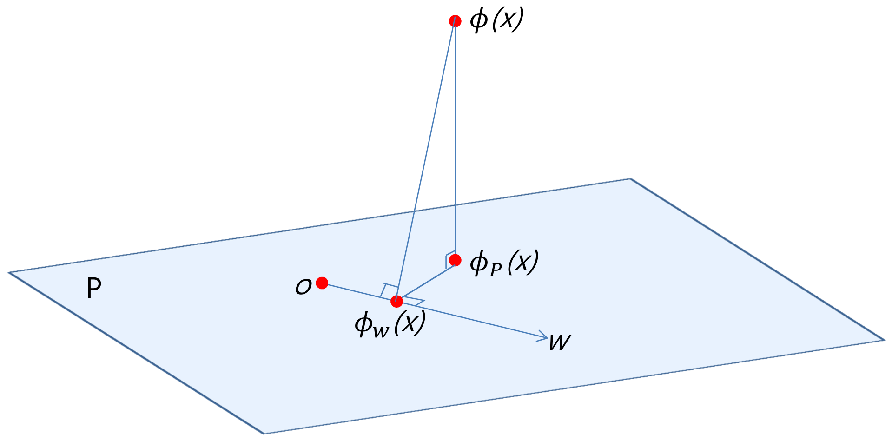

写在前面
介绍核方法中的非线性投影技巧(Nonlinear Projection Trick in Kernel Methods)。
核方法
核方法是将数据通过核函数转化为核矩阵，再运用模式识别算法进行分析。因此，核方法提供了模块化框架
- 在高维（甚至无限维）向量空间中映射数据。
- 在这样的空间中寻找（线性）关系。
如果映射选得足够合适，再复杂的关系也可以简化且容易检测到。
p.s. 这也意味着需要大量尝试核函数并探索先验信息。多核学习(Multiple Kernel Learning)，即基本核函数进行线性组合，通过参数学习来达到更优的结果。当然，这也可能会带来计算复杂和过拟合。
核技巧
核矩阵通过内积或ℓ2范数的形式描述嵌入空间数据的几何信息，被应用至大量机器学习算法中。但当算法不具备内积或ℓ2范数的形式时，例如基于ℓ1范数或非凸度量等优化问题，核技巧将不在适用。
因此，能否通过核方法找到输入数据到嵌入特征空间的直接映射吗？
核空间的几何结构

- 训练样本集X的核映射Φ(X)=[ϕ(x1),…,ϕ(xn)]组成特征空间的r维子空间P的正交基
设核矩阵K=Φ(X)TΦ(X)的秩为r，其特征分解K=UΛUT，则矩阵
Π=Φ(X)UΛ−21
的列πi=Φ(X)uiλi−21构成P的正交基。
- 训练样本x的核映射ϕ(x)在子空间K上的投影ϕP(x)的坐标
设核向量k(x)=Φ(X)Tϕ(x)
ϕP(x)=ΠΠTϕ(x)=ΠΛ−21UTk(x)
ϕP(x)可视为样本x到由Π张成子空间的非线性映射，映射后的直接产物为x→y=Λ−21UTk(x)。
Y=Λ−21UTK=Λ21UT
那么问题来了，坐标唯一吗？注意到：
KK⇒Y′=UΛUT=YTY(SVD)=Y′TY′(Cholesky decomp)=VΛ21UT=VY(SVD)
其中Y′是唯一确定的，而V是酉阵，因此Y的结果虽然不唯一，但是仅于Y′存在一个旋转。
若训练集合核映射后的特征矩阵是以原点为中心的，即满足∑iϕ(xi)=0，则映射后的点yi也是以原点为中心的，即∑iyi=0。但在实际应用中，这一假设过于理想，因此中心化处理非常有必要。
设增广数据集X′=[X,x]，投影Φ(X′)=[Φ(X),ϕ(x)]，残差为δϕP(x)=ϕ(x)−ϕP(x)(=0)，则
Φ(X′)位于包含P的r+1维子空间，Φ(X)的坐标为[YT,0]T，ϕ(x)的坐标为[yT,k(x,x)−yTy]T。
如果空间P中的向量具有形式w=Φ(X)α，则也可表示为w=Πβ，其中β=Yα为w在P中的坐标。
核映射ϕ(x)在w上的投影ϕw(x)=Πγ，其中γ=βTβββTy为ϕw(x)的坐标。
记Ψ(X)=[ψ(x1),…,ψ(xn)]为未中心化数据的特征，其均值ψˉ=n1∑i=1nψ(xi)。κ(a,b)=ψ(a)Tψ(b)为未中心化的核函数，K=Ψ(X)TΨ(X)为未中心化的核矩阵，κ(x)=[κ(x1,x),…,κ(xn,x)]T为未中心化的核向量。
中心化特征、中心化核矩阵、中心化核向量
Φ(X)Kk(x)=Ψ(X)−ψˉ1nT=Ψ(X)(In−En)=Φ(X)TΦ(X)=(In−En)K(In−En)=Φ(X)Tϕ(x)=(In−En)[κ(x)−n1K1n]
其中，En=n11n1nT。
核方法
算法应用
KPCA
argwmin∥wTΦ(X)∥22s.t.∥w∥2=2
SVM
argw,bmin21∥w∥22s.t.ci(wTϕ(xi)+b)≥1∀i
核技巧
Lagrange乘子对偶形式
argαmaxi=1∑nαi−21i,j=1∑nαiαjcicjk(xi,xj)s.t.i=1∑nαici=0,αi≥0∀i
w的结果为
w=i=1∑nαiciϕ(xi)⇒wTϕ(x)=i=1∑nαicik(xi,x)
b的结果可由约束条件的KKT条件得到
测试样本x分类
sgn(wTϕ(x)+b)
非线性投影技巧
非线性投影
Y=Λ21UT
原始问题
argv,dmin21∥v∥22s.t.ci(vTϕ(yi)+d)≥1∀i
对偶问题
argβmaxi=1∑nβi−21i,j=1∑nβiβjcicjyiTyjs.t.i=1∑nβici=0,βi≥0∀i
注意：k(xi,xj)=yiTyj
v的结果为
v=i=1∑nβiciyi
测试样本x首先映射为y=Λ−21UTk(x)，再分类
sgn(vTϕ(y)+d)
PCA-L1
原始形式
argwmax∥wTX∥1s.t.∥w∥2=1
核技巧
argwmax∥wTΦ(X)∥1s.t.∥w∥2=1
该问题不是基于ℓ2范数的优化问题，因此不容易求解。
非线性投影技巧
通过非线性投影Y=Λ21UT后，
w=Πβ,∥w∥2=∥β∥2=1,wTΦ(X)=βTY
原问题转化为
argβmax∥βTY∥1s.t.∥β∥2=1
显然，这两问题形式上一致，因此可使用PCA-L1算法（见基于L1范数的主成分分析 (opens new window)）来解决KPCA-L1问题。
References